Generated for ArkStream Quantitative Researcher Assessment
| Criterion | Threshold | Rationale |
|---|---|---|
| Observation Period | ≥ 60 days | Insufficient history makes performance assessment unreliable |
| Active Trading Days | ≥ 30 days | Ensures the trader has meaningful activity, not a dormant account |
| Data Continuity | Max gap ≤ 14 days | Large gaps suggest account inactivity or data issues |
| Account Size | Avg equity ≥ $1,000 | Micro-accounts have unreliable return profiles and poor executability |
| Sharpe Ratio | ≥ 0.5 | Minimum risk-adjusted return to justify following |
| Max Drawdown | ≤ 50% | Excessive drawdown indicates uncontrolled risk |
| Worst Single Day | ≥ -40% | Extreme single-day losses suggest tail risk or liquidation events |
| Win Rate | ≥ 35% | Very low win rate makes real-time following psychologically and operationally difficult |
| Profit Factor | ≥ 1.0 | Gains must exceed losses for a viable strategy |
=== Screening Summary === Total traders evaluated: 1948 Qualified: 214 (11.0%) Rejected: 1734 (89.0%) --- Rejection Breakdown --- win_rate: 962 traders max_gap: 768 traders sharpe: 684 traders active_days: 561 traders max_dd: 525 traders worst_day: 389 traders date_span: 381 traders profit_factor: 144 traders avg_equity: 43 traders --- Qualified Trader Stats --- sharpe: mean=2.487, median=2.140, std=1.426 sortino: mean=5.756, median=3.845, std=6.587 max_drawdown: mean=-0.265, median=-0.266, std=0.132 win_rate: mean=0.518, median=0.520, std=0.079 total_return: mean=1645980.623, median=0.833, std=24077061.259 composite_score: mean=0.502, median=0.507, std=0.204
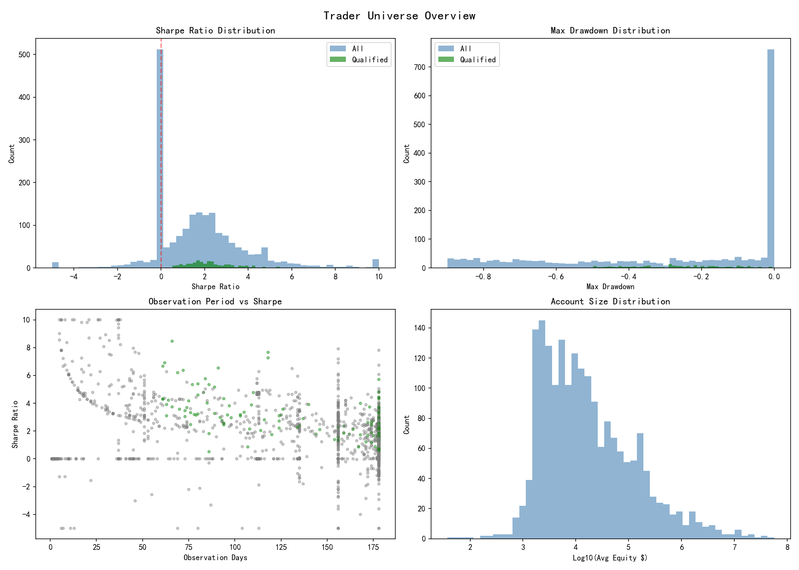
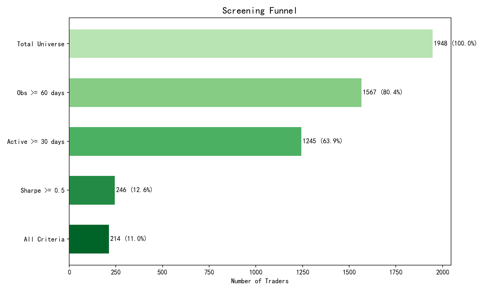
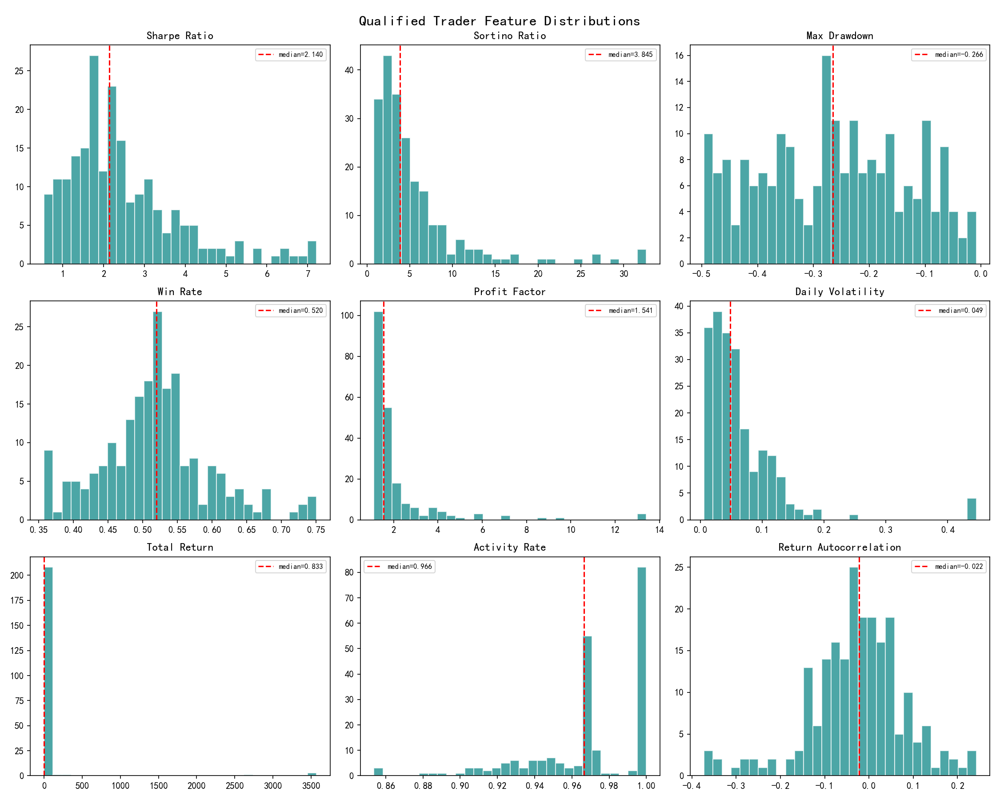
Traders are organized along two dimensions:
Score = 0.25 × rank(Sharpe) + 0.15 × rank(Sortino) + 0.10 × rank(Calmar) + 0.15 × rank(Profit Factor) + 0.15 × rank(Consistency) + 0.10 × rank(Win Rate) + 0.10 × rank(Tail Ratio)
=== Classification Summary ===
--- Tier Distribution ---
CORE: 65 traders, avg_sharpe=4.10, avg_score=0.748
SATELLITE: 85 traders, avg_sharpe=2.20, avg_score=0.499
WATCH: 64 traders, avg_sharpe=1.22, avg_score=0.256
--- Style Clusters ---
Cluster 0 (high_vol_pos_skew): 26 traders, sharpe=1.83, vol=0.1490
Tiers: {'satellite': 14, 'core': 6, 'watch': 6}
Cluster 1 (pos_skew): 161 traders, sharpe=2.46, vol=0.0554
Tiers: {'satellite': 61, 'watch': 54, 'core': 46}
Cluster 2 (high_wr_erratic_pos_skew): 26 traders, sharpe=3.30, vol=0.0428
Tiers: {'core': 12, 'satellite': 10, 'watch': 4}
Cluster 3 (high_vol_trend_low_wr_stable_pos_skew): 1 traders, sharpe=2.98, vol=0.4407
Tiers: {'core': 1}
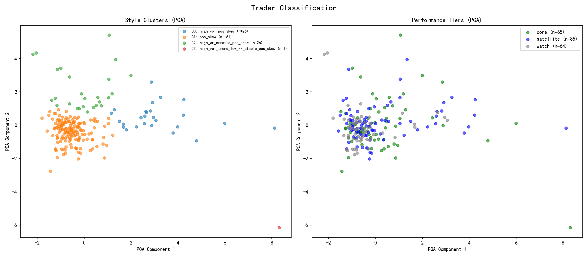
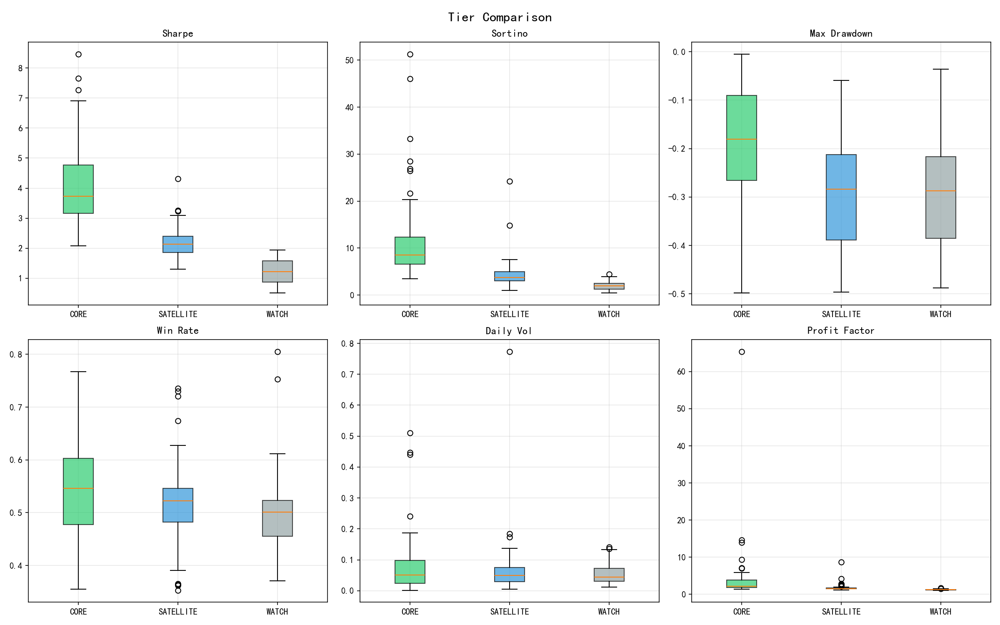
Two-level allocation hierarchy:
=== Allocation Summary === Traders allocated: 150 Total deployed weight: 90.00% Cash reserve: 10.00% --- Tier Breakdown --- CORE: 65 traders, total=45.13%, avg=0.69% SATELLITE: 85 traders, total=44.87%, avg=0.53% --- Cluster Breakdown --- Cluster 2 (high_wr_erratic_pos_skew): 22 traders, weight=28.45% Cluster 1 (pos_skew): 107 traders, weight=40.00% Cluster 0 (high_vol_pos_skew): 20 traders, weight=20.52% Cluster 3 (high_vol_trend_low_wr_stable_pos_skew): 1 traders, weight=1.03% --- Concentration --- Max single trader: 3.14% Top 5 traders: 13.66% Herfindahl index: 0.0094
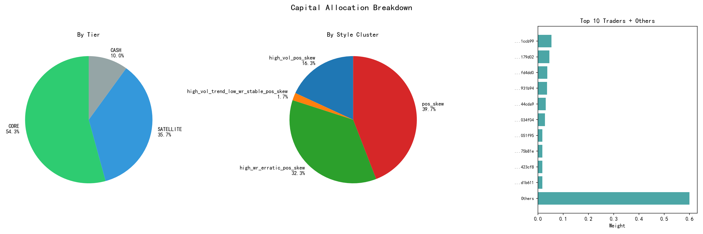
| tier | cluster_label | weight | dollar_allocation | sharpe | sortino | max_drawdown | win_rate | composite_score | |
|---|---|---|---|---|---|---|---|---|---|
| ...f41ccb99 | core | pos_skew | 5.31% | $5,305 | 3.19 | 4.00 | -0.58% | 63.89% | 0.685 |
| ...c8179d02 | core | high_wr_erratic_pos_skew | 4.55% | $4,548 | 7.26 | 12.74 | -4.22% | 67.86% | 0.786 |
| ...8ffd4dd0 | core | pos_skew | 3.71% | $3,707 | 4.80 | 10.32 | -0.82% | 67.44% | 0.933 |
| ...7d931b94 | core | high_wr_erratic_pos_skew | 3.59% | $3,591 | 7.66 | 11.24 | -4.69% | 64.29% | 0.772 |
| ...d744cda9 | core | high_wr_erratic_pos_skew | 3.08% | $3,082 | 4.59 | 26.39 | -0.50% | 56.76% | 0.799 |
| ...68034f04 | satellite | high_wr_erratic_pos_skew | 2.80% | $2,802 | 3.23 | 3.07 | -17.73% | 73.60% | 0.564 |
| ...5a051f95 | core | high_vol_pos_skew | 1.73% | $1,735 | 2.62 | 46.05 | -15.75% | 54.07% | 0.704 |
| ...fe75b81e | satellite | high_wr_erratic_pos_skew | 1.73% | $1,735 | 2.22 | 4.47 | -49.66% | 50.00% | 0.437 |
| ...ee423cf8 | core | high_wr_erratic_pos_skew | 1.73% | $1,735 | 4.77 | 6.79 | -23.57% | 61.82% | 0.788 |
| ...aad1b611 | satellite | high_vol_pos_skew | 1.73% | $1,735 | 2.32 | 7.57 | -49.38% | 48.31% | 0.601 |
| ...f620cff2 | satellite | high_vol_pos_skew | 1.73% | $1,735 | 1.71 | 24.25 | -46.52% | 50.89% | 0.597 |
| ...6f81bb63 | satellite | high_vol_pos_skew | 1.73% | $1,735 | 1.63 | 5.67 | -15.09% | 36.52% | 0.491 |
| ...472b066c | core | high_vol_trend_low_wr_stable_pos_skew | 1.73% | $1,735 | 2.98 | 51.28 | -6.65% | 36.96% | 0.832 |
| ...c3f780e6 | core | high_wr_erratic_pos_skew | 1.73% | $1,735 | 3.40 | 8.08 | -8.66% | 54.49% | 0.647 |
| ...97ebf33b | satellite | high_vol_pos_skew | 1.73% | $1,735 | 2.22 | 3.60 | -25.63% | 39.89% | 0.450 |
| ...7679a8a2 | satellite | high_wr_erratic_pos_skew | 1.73% | $1,735 | 1.89 | 2.26 | -31.50% | 59.55% | 0.414 |
| ...dcd1ddcc | core | high_wr_erratic_pos_skew | 1.73% | $1,735 | 5.34 | 12.30 | -24.77% | 62.34% | 0.875 |
| ...08d91ede | core | high_wr_erratic_pos_skew | 1.73% | $1,735 | 5.39 | 7.85 | -9.05% | 68.00% | 0.803 |
| ...19aeac7b | satellite | high_vol_pos_skew | 1.73% | $1,735 | 2.16 | 7.03 | -34.32% | 57.23% | 0.592 |
| ...498d35f1 | satellite | high_vol_pos_skew | 1.73% | $1,735 | 1.82 | 5.61 | -37.09% | 50.00% | 0.632 |
Full list exported to report/selected_traders.csv
=== Backtest Results === Engine: cython Period: 2025-07-10 to 2026-01-04 Trading days: 179 --- Returns --- Total return: 162.26% Annualized return: 614.23% Volatility (ann.): 36.95% --- Risk-Adjusted --- Sharpe ratio: 5.503 Sortino ratio: 123.782 Calmar ratio: 1115.696 --- Risk --- Max drawdown: -0.55% Max DD duration: 4 days VaR (5%): -0.13% CVaR (5%): -0.21% --- Trading --- Win rate: 78.77% Profit factor: 29.99 Max consecutive losses: 3 Stop-loss events: 202
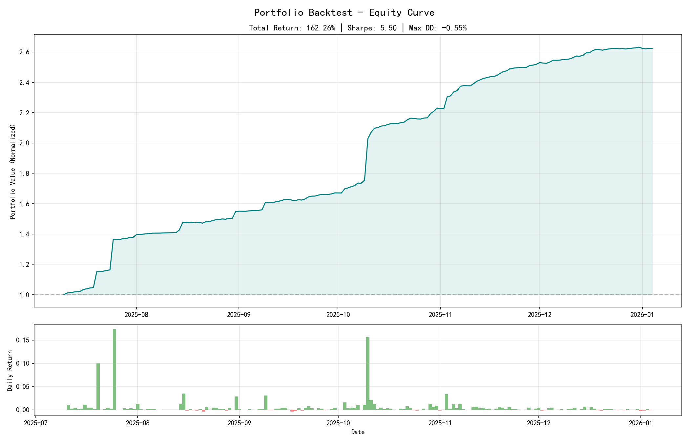
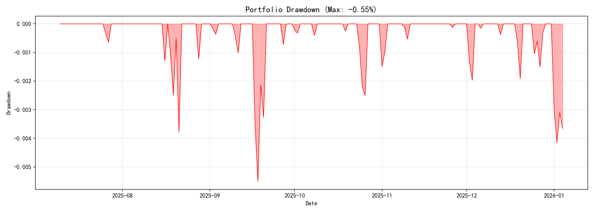
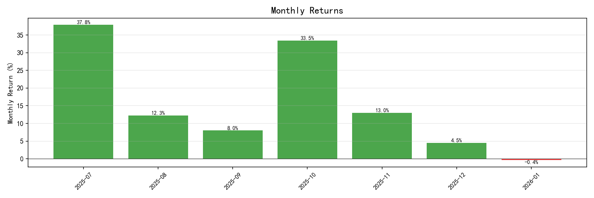
Split at 2025-10-25 (100,000)
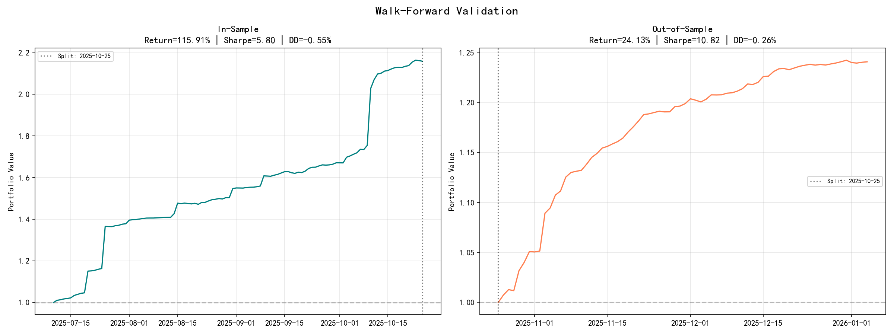
| Layer | Mechanism | Threshold | Action |
|---|---|---|---|
| Per-Trader | Trailing Stop Loss | -15% | Halt following, 14-day cooldown, re-enter at 50% weight |
| Per-Trader | Drawdown Reduction | -8% | Reduce weight to 50% of initial |
| Portfolio | Circuit Breaker | -10% portfolio DD | Reduce all positions by 50% |
| Portfolio | Daily Loss Limit | -3% | Alert + manual review |
| Structural | Cluster Limit | 40% | Cap allocation to any single style cluster |
| Structural | Single Trader Cap | 10% | Hard cap on individual position |
| Structural | Correlation Monitor | ρ > 0.7 | Reduce lower-scored trader in correlated pair |
Historical performance is not guaranteed to persist. Our mitigations:
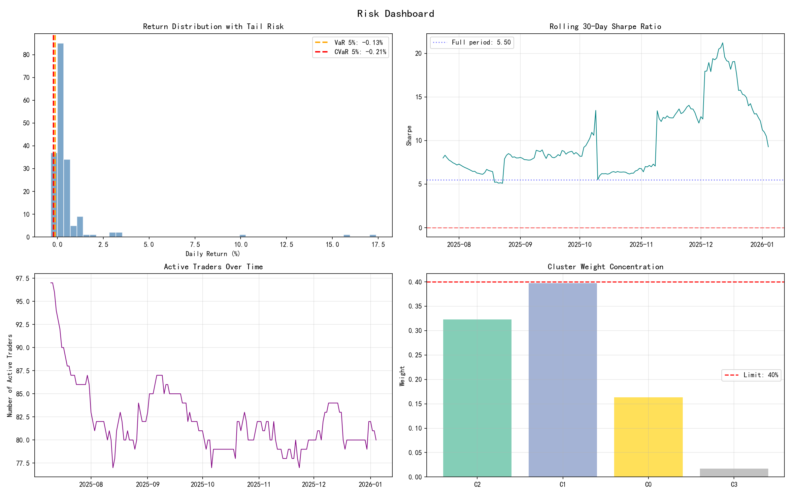
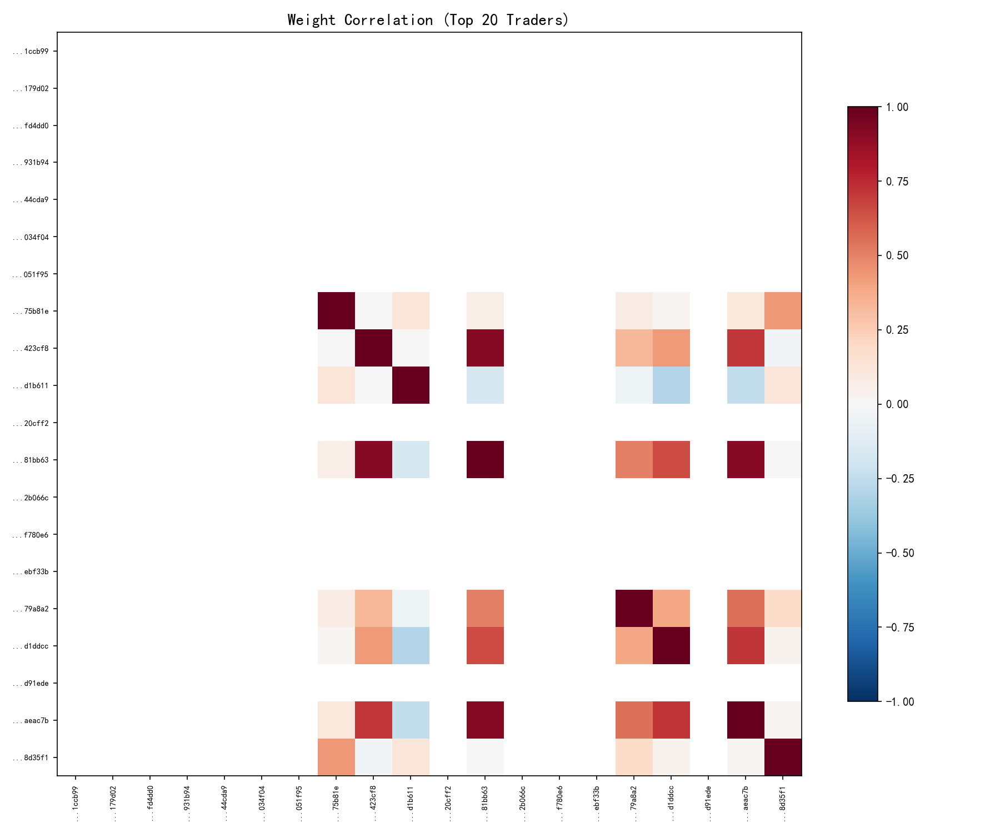
| Metric | Frequency | Alert Threshold |
|---|---|---|
| Portfolio P&L | Real-time | Daily loss > -3% |
| Per-Trader Drawdown | Real-time | DD > -15% |
| Portfolio Drawdown | Real-time | DD > -10% |
| Execution Slippage | Per-trade | > 10 bps deviation from signal |
| Cluster Correlation | Weekly | Avg pairwise ρ > 0.5 |
| Rolling Sharpe | Weekly | 30-day Sharpe < 0 |
| Active Trader Count | Daily | < 50% of initial pool |